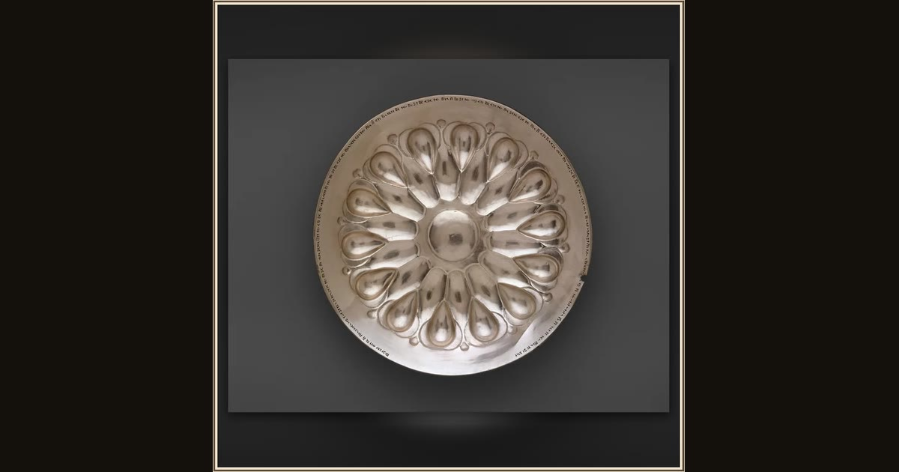

Lobed bowl with a royal inscription
Achaemenid · ca. 465–424 BCE · met
A lobed silver bowl with a royal Achaemenid inscription round the rim. In Mardonius' tent Pausanias marvels at the gold and silver couches, tables and banquet service (9.82). Explore its place in Herodotus's Histories, Book IX, chapter 220.